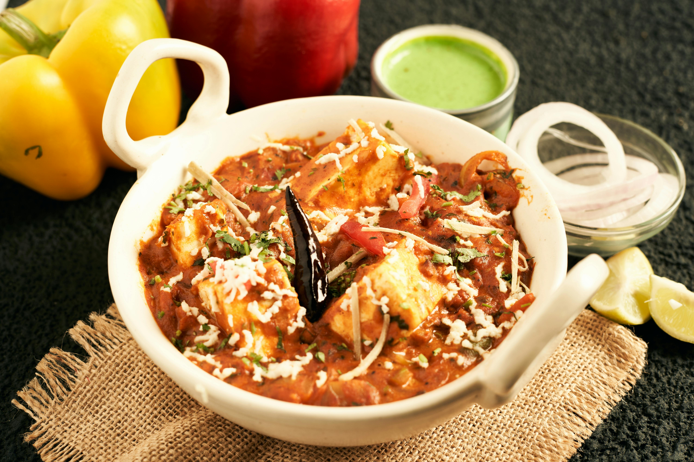

Paneer Butter Masala

Ingredients
For the Gravy
200g paneer (cottage cheese), cubed
2 tablespoons butter
2 tablespoons oil
1 large onion, finely chopped
3 medium tomatoes, chopped
1 tablespoon ginger-garlic paste
8-10 cashew nuts
1 teaspoon cumin seeds
1 teaspoon coriander powder
1 teaspoon garam masala
1 teaspoon red chili powder (adjust to taste)
1/2 teaspoon turmeric powder
1 teaspoon kasuri methi (dried fenugreek leaves)
1/4 cup heavy cream
Salt to taste
1 cup water
For Garnish:
Fresh coriander leaves, chopped
Extra cream (optional)